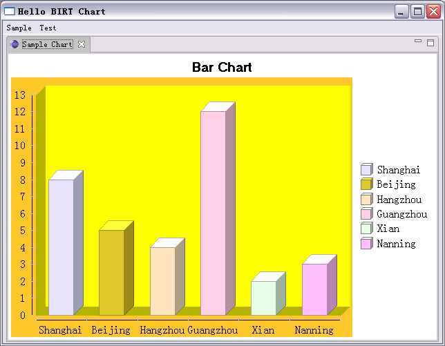

Introduction
Charts are a common and important way to display data in business intelligence and other applications. BIRT (Business Intelligence and Reporting Tools), an Eclipsed based reporting tool, provides not only a nice report designing tool, but a powerful chart engine, named BIRT Chart Engine, to illustrate data with pretty charts to end user. If you need to use chart in your plug-in, BIRT Chart Engine is really a good choice. It supports almost all major chart types, and can be rendered on SWT/SWING widgets and image file of many formats. Here I'd like to show you what capabilities BIRT Chart Engine can provide, and how to use it on SWT widget in your plug-in.
What BIRT Chart Engine can provide
BIRT Chart Engine supports a variety of chart types. Here, let's have a look at what they look like. (Note, only basic and important charts are listed here. You can refer to BIRT document for more details)
 |
 |
|
Bar Chart |
Multi-Bar Chart |
Line Chart |
 |
 |
 |
Pie Chart |
Stacked Chart |
Scatter Chart |
 |
||
Stock Chart |
Area Chart |
{kind=link}
{kind=link}
Figure 1. Chart Samples
Preparation
This article uses Eclipse SDK 3.2.2 and BIRT 2.1.1. You can use Eclipse Callisto Discovery Site to install BIRT and its dependency plug-ins by selecting "Help > Software Updates > Find and Install..." and choosing "Search for new features to install" in dialog. After selecting mirror update site, you can see all features under Callisto Discovery Site as follows.
In this dialog, select "Eclipse BIRT Report Designer Framework 2.1.2" and click "Select Required". Now BIRT and all its dependency features are selected to install. Then click "Next", and install all these features. This article also provides sample code, and you can download it at com.ibm.examples.chart.zip.
BIRT contains about fifty plug-ins, but if we just use BIRT Chart in our application, what you need are only four required plug-ins. They are listed in the following table. So you just need include these four when distributing your application.
Plug-in Name |
Description |
| org.eclipse.birt.chart.device.extension | Allows third part to extend chart render device |
org.eclipse.birt.chart.engine.extension |
Allows third part to extend chart engine |
| org.eclipse.birt.chart.engine | Renders chart |
| org.eclipse.birt.core | Provides basic functionalities for all BIRT plug-ins |
Table 1. BIRT Chart Engine Plug-ins
Till now, we have set environment to develop chart. Please unzip sample code (com.ibm.examples.chart.zip), and import it into your workspace. You will find all code snippets in this article in sample code.
Concepts
Before we start to use chart engine, let's go through the basic concepts of chart, which can help to understand chart engine API better. The following is a simple bar chart, which contains the basic elements, like title, axis, and so on.

Figure 2. Concepts in One Bar Chart
Concept |
Description |
Title Area |
The area containing chart title |
Plot Area |
The area with red border, containing X/Y title, axis, and bars |
Legend Area |
The area that is reserved to host legend |
Legend Client Area |
The area containing legend to explain the meaning of bar with different series |
Title |
Describes the data that the chart displays for |
Major Grid |
Indicates the major scale (Minor Grid is supported, but not displayed here) |
X/Y Title |
Describes the meaning of X/Y axis |
X/Y Axis |
Provides the label or scale value of X/Y axis |
Series |
Defines how to display data, bar, line, or pie, for example |
Most charts have axes, but some haven't. One example without axis is pie chart. The horizontal axis is called base axis. The base axis can be category axis or value axis. The category axis just contains a sequence of label, while value axis contains the values. The vertical axis is called orthogonal axis, and it is always value axis. BIRT Chart Engine only supports one base axis, and more than one orthogonal axis now, but only one orthogonal axis is primary. Each axis can have more than one series definition, but at most of time, only one series definition is used. Series definition defines the color palette, label displaying format, and the associated series. Similarly, one series definition can have more than one series. Series determines how to show data. For example, bar series will show data with bar, and pie series shows data with pie.
Create Your First Chart
Then, let's see how to create a simple bar chart to understand the above concepts. This bar chart has one category base axis, and one value orthogonal axis. It also contains title and legend as follows:

Now, let's do it step by step. (The complete source can be found in com.ibm.examples.chart.widget.chart.TestChartBuilder)
- Create chart instance
chart = ChartWithAxesImpl.create(); chart.setDimension(ChartDimension.TWO_DIMENSIONAL_WITH_DEPTH_LITERAL);Bar chart has two axes, so we call ChartWithAxesImpl.create() to create it. The second statement sets dimension with ChartDimension.TWO_DIMENSIONAL_WITH_DEPTH_LITERAL, so that the bar has shade, which looks prettier.
- Set background color of plot
chart.getPlot().setBackground(ColorDefinitionImpl.ORANGE()); chart.getPlot().getClientArea().setBackground(ColorDefinitionImpl.YELLOW());You can change the background color of plot or plot's client area. The above code sets the plot's background to orange, and sets the client area's background to yellow.
- Enable legend
chart.getLegend().setItemType(LegendItemType.CATEGORIES_LITERAL); chart.getLegend().setVisible(true);By default, the legend is disabled, so you need use Legend.setVisible(true) to enable it. There are two legend types, LegendItemType.CATEGORIES_LITERAL and LegendItemType.SERIES_LITERAL. The former shows different legend icon for each category, and the later shows different icon for each series.
- Set chart title
chart.getTitle().getLabel().getCaption().setValue(title); chart.getTitle().getLabel().getCaption().getFont().setSize(14); chart.getTitle().getLabel().getCaption().getFont().setName(FONT_NAME);To set chart title is very simple as the first line shows. You can also set other attributes of title, like font size, font name, font style, and so on.
- Create axes
 xAxis = ((ChartWithAxes) chart).getPrimaryBaseAxes()[0];
xAxis.getTitle().setVisible(true);
xAxis.getTitle().getCaption().setValue(xTitle);
xAxis = ((ChartWithAxes) chart).getPrimaryBaseAxes()[0];
xAxis.getTitle().setVisible(true);
xAxis.getTitle().getCaption().setValue(xTitle);
 yAxis = ((ChartWithAxes) chart).getPrimaryOrthogonalAxis(xAxis);
yAxis.getTitle().setVisible(true);
yAxis.getTitle().getCaption().setValue(yTitle);
yAxis.getScale().setStep(1.0);
yAxis = ((ChartWithAxes) chart).getPrimaryOrthogonalAxis(xAxis);
yAxis.getTitle().setVisible(true);
yAxis.getTitle().getCaption().setValue(yTitle);
yAxis.getScale().setStep(1.0);
We get
the
first primary base axis as X axis, while
Y axis is the orthogonal one based on X axis. By default, the title of axis
is not visible, so we enable that for both axes, and set their titles. Finally,
we specify the scale step on Y axis as 1. - Create X series
TextDataSet categoryValues = TextDataSetImpl.create(dataSet.getCities());
Series seCategory = SeriesImpl.create();
seCategory.setDataSet(categoryValues);
 SeriesDefinition sdX = SeriesDefinitionImpl.create();
sdX.getSeriesPalette().update(1);
SeriesDefinition sdX = SeriesDefinitionImpl.create();
sdX.getSeriesPalette().update(1);
 xAxisPrimary.getSeriesDefinitions().add(sdX);
sdX.getSeries().add(seCategory);
xAxisPrimary.getSeriesDefinitions().add(sdX);
sdX.getSeries().add(seCategory);
The first thing to create X series is
to create the data set to bind. There are four types of data set, and they
are DataTimeDataSet, NumberDataSet, StockDataSet, and TextDataSet. In this
example, X axis is a category axis, so we use TextDataSet here. Then,
create a series, and bind the data set to it. In order to define what the
series looks like, you need
create a series definition. Here we choose the series palette 1. BIRT Chart
Engine predefines two color palettes. Finally,
add the series definition to X axis, and add series to series definition. - Create Y series
NumberDataSet orthoValuesDataSet1 = NumberDataSetImpl.create(dataSet.getTechnitians());
BarSeries bs1 = (BarSeries) BarSeriesImpl.create();
bs1.setDataSet(orthoValuesDataSet1);
SeriesDefinition sdY = SeriesDefinitionImpl.create();
yAxisPrimary.getSeriesDefinitions().add(sdY);
sdY.getSeries().add(bs1);
To create Y series is similar to X series. Here, Y axis must be a value axis, so we use
NumberDataSet for Y series.
Now, you finish creating your first chart. In the next section, we will see how to make this chart display on your canvas.
Create Chart Canvas
BIRT Chart Engine doesn't provide any SWT chart widget which can be used in Composite directly. So you need create it by yourself, if you want to display chart in one editor or view. In the following example, we create ChartCanvas, which extends from Canvas.
public class ChartCanvas extends Canvas {
...
public ChartCanvas(Composite parent, int style) {
super(parent, style);
// initialize the SWT rendering device
try {
PluginSettings ps = PluginSettings.instance();
render = ps.getDevice("dv.SWT");
} catch (ChartException pex) {
DefaultLoggerImpl.instance().log(pex);
}
...
In the constructor,  we need get the device render for SWT. The device render is responsible to render
chart onto target device. The target device can be an image file or device like
SWT or SWING. BIRT Chart Engine defines 9 device renders in org.eclipse.birt.chart.util.PluginSettings,
and they are:
we need get the device render for SWT. The device render is responsible to render
chart onto target device. The target device can be an image file or device like
SWT or SWING. BIRT Chart Engine defines 9 device renders in org.eclipse.birt.chart.util.PluginSettings,
and they are:
Device Name |
Description |
dv.SWING |
Renders chart on SWING's java.awt.Graphics2D |
dv.SWT |
Renders chart on SWT's org.eclipse.swt.graphics.GC |
dv.PNG24 |
Renders chart to 24-bit PNG file (deprecated) |
dv.GIF8 |
Renders chart to 8-bit GIF file (deprecated) |
dv.PNG |
Renders chart to PNG file |
dv.GIF |
Renders chart to GIF file |
dv.JPEG/dv.JPG |
Renders chart to JPEG file |
dv.BMP |
Renders chart to BMP file |
dv.SVG |
Renders chart to SVG file (Contributed by IBM, and need org.eclipse.birt.chart.device.svg) |
Here we select "dv.SWT" as our device render in ChartCanvas, since we will render chart on SWT widget. In this constructor, we add one paint listener to do actual painting work.
Considering performance, we use double-buffering to draw chart on canvas.
In the paint listener  ,
if this is the first time to get paint event, we
,
if this is the first time to get paint event, we  build the chart with given data with buildChart(),
and then
build the chart with given data with buildChart(),
and then  draw the
chart on one image named cached image with drawToCachedImage(...).
So after the cached image is drawn or for the paint events received later, we
can call GC.drawImage(...)
draw the
chart on one image named cached image with drawToCachedImage(...).
So after the cached image is drawn or for the paint events received later, we
can call GC.drawImage(...)  to draw the cached image to GC. Then, let's have a look at the details of these
two methods: buildChart(), and
drawToCachedImage(...).
to draw the cached image to GC. Then, let's have a look at the details of these
two methods: buildChart(), and
drawToCachedImage(...).
private void buildChart() {
Point size = getSize();
Bounds bo = BoundsImpl.create(0, 0, size.x, size.y);
int resolution = render.getDisplayServer().getDpiResolution();
bo.scale(72d / resolution);
try {
Generator gr = Generator.instance();
state = gr.build(render.getDisplayServer(),
chart,
bo,
null,
null,
null);
} catch (ChartException ex) {
DefaultLoggerImpl.instance().log(ex);
}
}
The method, buildChart(), is
responsible to build runtime chart state with the render display server. One
important thing to do is to scale the bounds of chart from pixel to point. SWT
and other screen based renders always use pixel, which is logic unit, for example
the monitor with the resolution (800 pixels * 600 pixels). However, BIRT Chart
Engine uses point, which is the absolute unit (1 point = 1/72 inch). So we need
to  scale the bounds
of chart from pixel to point. Another one is to
scale the bounds
of chart from pixel to point. Another one is to  get a Generator instance and
get a Generator instance and
 build runtime chart
state with the given chart model and display server. So the generated runtime
chart state is associated with the DisplayServer
from render, chart model, and bounds to render. DisplayServer
provides render related information, like DPI (Dots Per Inch) resolution. Bounds
define the area that the generated chart will be drawn on.
build runtime chart
state with the given chart model and display server. So the generated runtime
chart state is associated with the DisplayServer
from render, chart model, and bounds to render. DisplayServer
provides render related information, like DPI (Dots Per Inch) resolution. Bounds
define the area that the generated chart will be drawn on.
public void drawToCachedImage(Rectangle size) {
GC gc = null;
try {
if (cachedImage != null)
cachedImage.dispose();
cachedImage = new Image(Display.getCurrent(), imageData);
gc = new GC(cachedImage);
render.setProperty(IDeviceRenderer.GRAPHICS_CONTEXT, gc);
Generator gr = Generator.instance();
gr.render(render, state);
} catch (ChartException ex) {
DefaultLoggerImpl.instance().log(ex);
} finally {
if (gc != null)
gc.dispose();
}
In the method, drawToCachedImage(...),
we draw the generated runtime chart state on cached image. First,  create GC for cached image, and
create GC for cached image, and
 set it to render
with the property name IDeviceRenderer.GRAPHICS_CONTEXT.
Then, generator will
set it to render
with the property name IDeviceRenderer.GRAPHICS_CONTEXT.
Then, generator will  ask render
to perform actual rendering with the generated runtime chart state. Finally,
don't forget to dispose GC, because
GC represents the underlying
system resource.
ask render
to perform actual rendering with the generated runtime chart state. Finally,
don't forget to dispose GC, because
GC represents the underlying
system resource.
Here, we get a SWT canvas widget to display chart and also go through the process to render chart to a specific device. Now you can create an instance of ChartCanvas, assign chart instance to it, and insert this canvas into your view. After doing those, you'll get one view displaying BIRT chart.
Others
1. Render Chart to File
BIRT Chart Engine also supports to render chart to file directly. The process is similar to the above. The difference is the render device and you needn't use cached image. First, get the render device for PNG file. Then, set the render property, IDeviceRender.FILE_IDENTIFIER, with file name. The other steps are as same as rendering chart on screen.
try {
PluginSettings ps = PluginSettings.instance();
render = ps.getDevice("dv.PNG");
render.setProperty(IDeviceRenderer.FILE_IDENTIFIER, "chart.png");
} catch (ChartException ex) {
DefaultLoggerImpl.instance().log(ex);
}
Conclusion
This article introduces the whole process of using BIRT Chart Engine in plug-in development. BIRT Chart Engine supports almost all types of chart, like bar chart, pie chart, and so on. It also has good abstraction for rendering device, and supports many rendering devices, including SWT widget, SWING widget, JPEG, GIF, PNG, and so far. Although this article focuses on rendering chart on SWT canvas, the concepts and process to render on other devices are same.
However, BIRT Chart Engine is not a light-weight chart component. BIRT uses
EMF for modeling, so you have to include four required BIRT plug-ins and several
EMF plug-ins if you use BIRT Chart Engine. Anyway, it is a good tool to display
chart, and enjoy it!